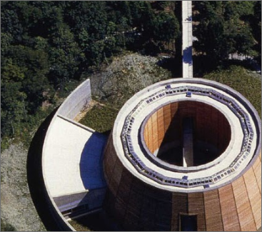

My Blog

Il XXI SECOLO: TRA ASTRAZIONE
Il XXI SECOLO: TRA ASTRAZIONE
E TECONOLOGIA
Il ventunesimo secolo è stato, ed è tutt'ora, per l'architettura come per ogni altra disciplina il secolo della rivoluzione tecnologica. Molto di ciò che succede nel nostro quotidiano era, solo qualche decennio fa, decisamente impensabile….
read more